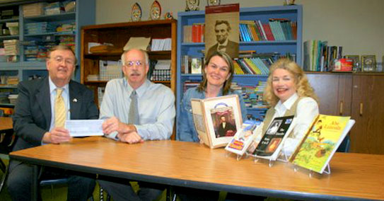

Our Story
THE YEAR AHEAD
Welcome to Jacksonville's Lincoln Bicentennial Web site. Our Celebration of the anniversary of Lincoln's 200th birthday begins with this year's 10th Annual Chautauqua — Aug. 29 through Sept. 1 — entitled “The Age of Lincoln” (see Highlights), and it ends with a July 4, 2009, Grand Finale parade, fireworks, and an appearance by our 16th President and wife Mary as they did 150 years ago at Jacksonville's 1858 Independence Day festivities.
Jacksonville Celebrates Lincoln Through Education And The Arts, — And By Telling The Stories Of His Many Local Ties. |
THE THEME
The theme of our celebration, as printed in the box above, highlights three of Jacksonville 's proudest community assets: education, the arts, and our rich Lincoln history. It has been our intention to center our celebration on these special features so we might showcase some of our City's finest attractions.
EDUCATION
Jacksonville is proud of its long tradition of excellence in education with three colleges, two state schools for the deaf and visually impaired, and an outstanding offering of public and private schools for elementary and secondary students.

Jacksonville Lincoln Bicentennial co-chairs Jacksonville Mayor Ron Tendick, left, and Loreli Steuer, right, show District 117 Superintendent Les Huddle and Curriculum Director Carol Kilver that a check for almost $50,000 has arrived from the State of Illinois. The funding has been awarded to purchase a Lincoln book for each public and private school student in Jacksonville from kindergarten through 12th grade. Samples of the books selected are displayed on the table to the right. The books will be part of the fall school curriculum, serving as a resource for citywide contests in reading, writing artwork, and quiz bowls on the history of Lincoln 's life and times and his contributions as America's 16th President. — From the May 25, 2008, Jacksonville Journal-Courier, Jacksonville, Ill.
THE ARTS
Although the population of Jacksonville and South Jacksonville totals only some 22,000 citizens, the Arts have a prominent place in the Community's ongoing calendar of events.
Music  is offered through a full-sized symphony orchestra and chorale in addition to the concert choirs and instrumental ensembles performing at Illinois and MacMurray colleges. The Illinois College Fine Arts Series also offers premier musical and dramatic productions from around the nation — and the world .
is offered through a full-sized symphony orchestra and chorale in addition to the concert choirs and instrumental ensembles performing at Illinois and MacMurray colleges. The Illinois College Fine Arts Series also offers premier musical and dramatic productions from around the nation — and the world .
Drama  may be enjoyed in the year-round theatrical performances at the Jacksonville Theater Guild and at the colleges during the school year. The colleges and a number of civic organizations also offer a wide variety of speakers, and the annual Chautauqua (see Highlights) has four days of music, story tellers, and speakers enacting famous American historic figures.
may be enjoyed in the year-round theatrical performances at the Jacksonville Theater Guild and at the colleges during the school year. The colleges and a number of civic organizations also offer a wide variety of speakers, and the annual Chautauqua (see Highlights) has four days of music, story tellers, and speakers enacting famous American historic figures.
The Visual Arts  are represented by the continuous exhibits at the historic Strawn Art Gallery and seven downtown boutique galleries and shops, as well as at the Lincoln Land Community College Art Gallery.
are represented by the continuous exhibits at the historic Strawn Art Gallery and seven downtown boutique galleries and shops, as well as at the Lincoln Land Community College Art Gallery.
LOCAL LINCOLN HISTORY
Because Lincoln made over 40 trips alone to try court cases in Jacksonville, had close relatives of many residing here, and numerous close friends in the city and at Illinois College, it is not surprising that there are many documented stories of his presence. To celebrate these many historical connections, each of Jacksonville's active historical organizations in addition to the city's colleges, secondary, and elementary schools will be sponsoring Lincoln-related programs. Some of these major history groups to look for in the Calendar of Events are: the Morgan County Historical Society, Looking for Lincoln, the Underground Railroad Committee, the Governor Duncan Association, the Grierson Society, and the Juneteenth Committee.
More on the celebration:
>> Education
>> The Arts
>> Lincoln History